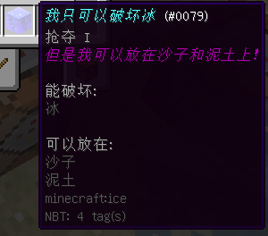

右图则为冒险模式的主要界面，接下来将讲解其内容。
Minecraft对于冒险模式设立了两个特有的标签，允许放置于某方块上，和允许破坏某方块。
注意：点击下一页保存当前页内容，再生成！
此窗口需要在生成物品窗口中点击冒险模式按钮打开。
↑
/give @p minecraft:ice 1 0 {CanDestroy:["minecraft:ice"],CanPlaceOn:["minecraft:sand","minecraft:dirt"],ench:[{id:21s,lvl:1s}],display:{Name:"我只可以破坏冰",Lore:[0:"但是我可以放在沙子和泥土上！",]}}